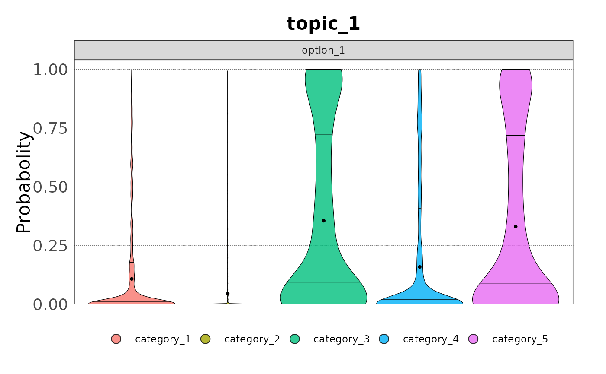
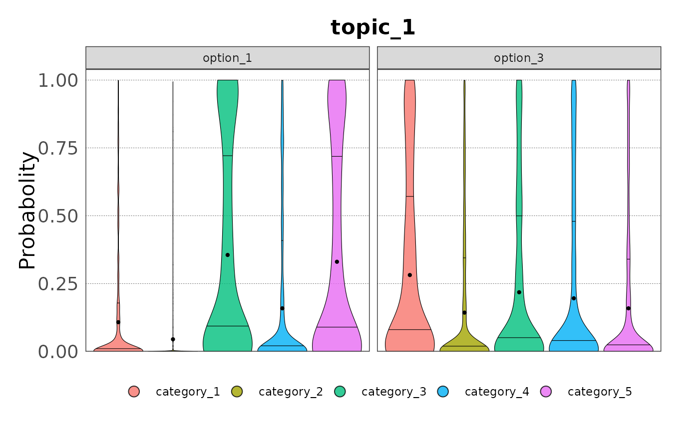
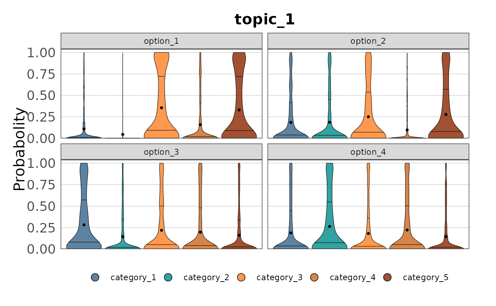
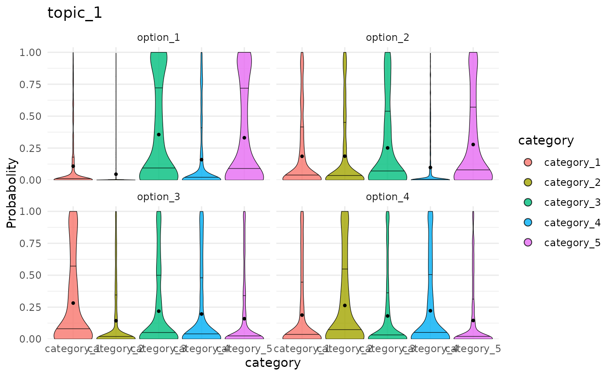
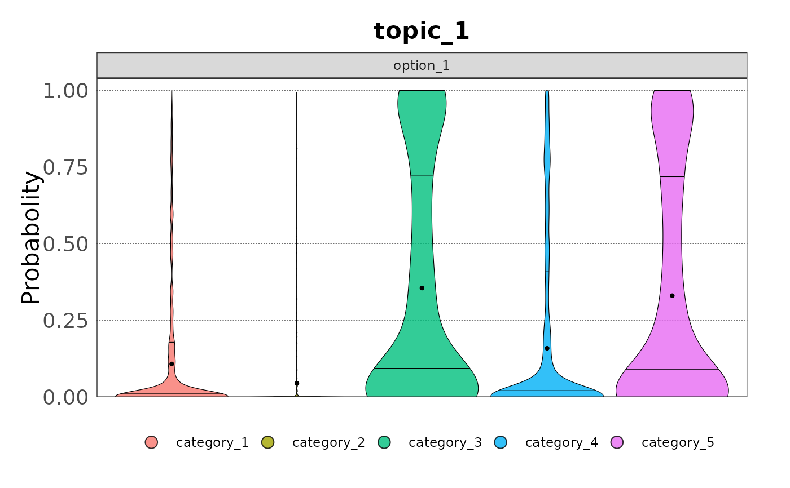
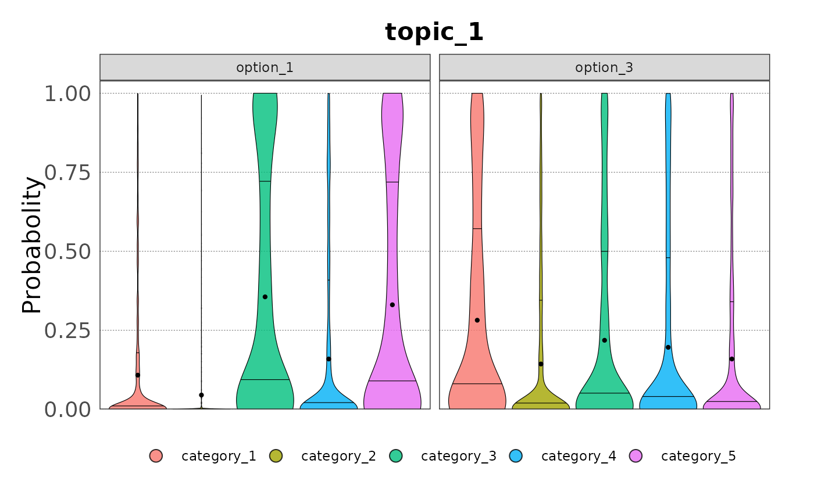
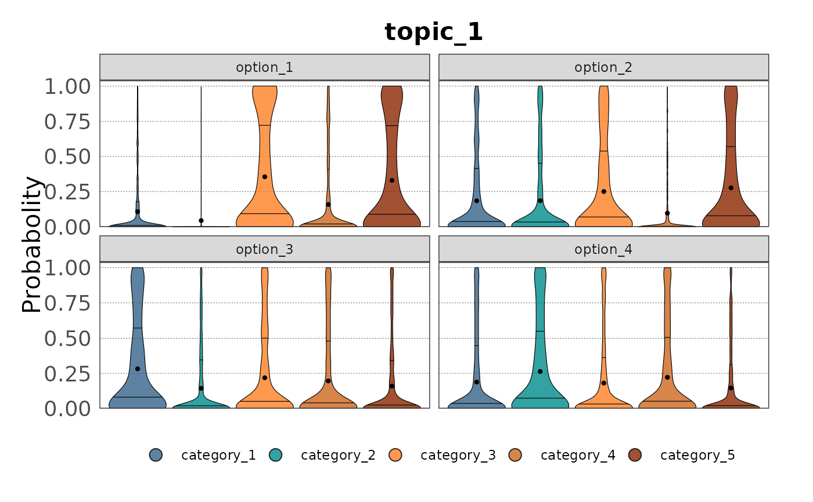
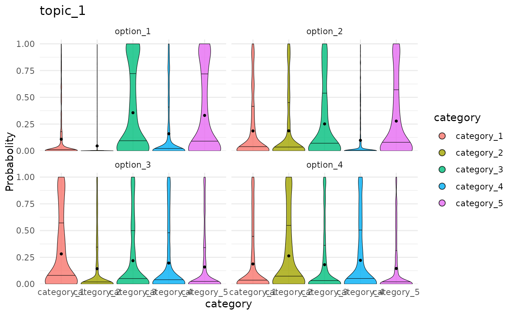

![[Experimental]](figures/lifecycle-experimental.svg)
plot() aggregates and plots categorical samples as violin plot.
Usage
# S3 method for class 'cat_sample'
plot(
x,
...,
option = "all",
title = NULL,
ylab = "Probabolity",
colours = NULL,
family = "sans",
theme = NULL
)Arguments
- x
an object of class
cat_samplecreated by the function cat_sample_data.- ...
Unused arguments, included only for future extensions of the function.
- option
character string with the name of the option or character vector with the options that you want to extract from the data. Use
allfor all options.- title
character string with the title of the plot. If
NULL, the title will be the topic name.- ylab
character string with the label of the y-axis.
- colours
vector of colours to use for the categories.
- family
character string with the font family to use in the plot.
- theme
a
themefunction to overwrite the default theme.
Value
Invisibly a ggplot object.
See also
Other plot helpers:
plot.cont_sample(),
plot.elic_cont()
Examples
# Create the elic_cat object for an elicitation process with three topics,
# four options, five categories and a maximum of six experts per topic
my_categories <- c("category_1", "category_2", "category_3",
"category_4", "category_5")
my_options <- c("option_1", "option_2", "option_3", "option_4")
my_topics <- c("topic_1", "topic_2", "topic_3")
my_elicit <- cat_start(categories = my_categories,
options = my_options,
experts = 6,
topics = my_topics) |>
cat_add_data(data_source = topic_1, topic = "topic_1") |>
cat_add_data(data_source = topic_2, topic = "topic_2") |>
cat_add_data(data_source = topic_3, topic = "topic_3")
#> ✔ <elic_cat> object for "Elicitation" correctly initialised
#> ✔ Data added to Topic "topic_1" from "data.frame"
#> ✔ Data added to Topic "topic_2" from "data.frame"
#> ✔ Data added to Topic "topic_3" from "data.frame"
# Sample data from Topic 1 for all options using the basic method
samp <- cat_sample_data(my_elicit,
method = "basic",
topic = "topic_1")
#> ✔ Data sampled successfully using "basic" method.
# Plot the sampled data for all options
plot(samp)
 # Plot the sampled data for option 1
plot(samp, option = "option_1")

# Plot the sampled data for option 1 and 3
plot(samp, option = c("option_1", "option_3"))

# Provide custom colours
plot(samp, colours = c("steelblue4", "darkcyan", "chocolate1",
"chocolate3", "orangered4"))

# Overwrite the default theme
plot(samp, theme = ggplot2::theme_minimal())

# Plot the sampled data for option 1
plot(samp, option = "option_1")

# Plot the sampled data for option 1 and 3
plot(samp, option = c("option_1", "option_3"))

# Provide custom colours
plot(samp, colours = c("steelblue4", "darkcyan", "chocolate1",
"chocolate3", "orangered4"))

# Overwrite the default theme
plot(samp, theme = ggplot2::theme_minimal())
